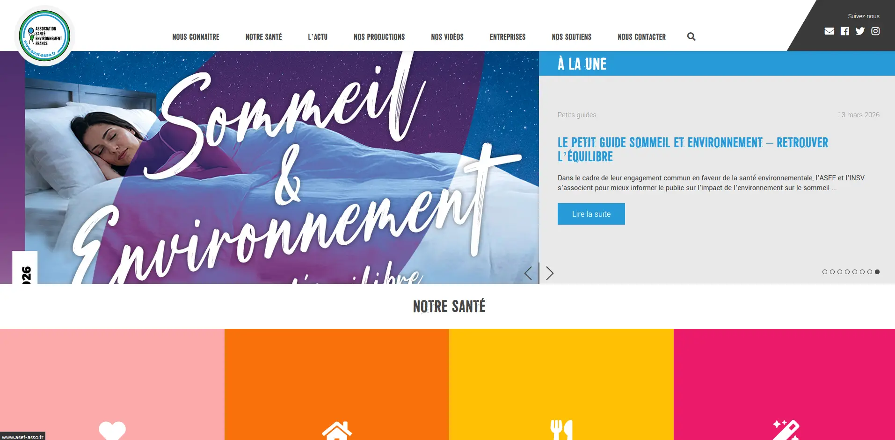

« Soutenir des initiatives engagées en faveur de la prévention et
de la santé fait partie intégrante de l’engagement de Nutergia. À travers notre politique de
mécénat, nous accompagnons des associations qui contribuent à mieux informer le public et à
faire évoluer durablement les comportements de santé et de responsabilité environnementale.
Dans ce cadre, nous mettons aujourd’hui en lumière l’ASEF, dont la récente publication d’un ouvrage vient renforcer la sensibilisation du grand public aux enjeux de santé environnementale et à la compréhension de leurs impacts sur la santé. »
Dans ce cadre, nous mettons aujourd’hui en lumière l’ASEF, dont la récente publication d’un ouvrage vient renforcer la sensibilisation du grand public aux enjeux de santé environnementale et à la compréhension de leurs impacts sur la santé. »
Antoine Lagarde, Directeur général
Qu’est-ce que l’ASEF ?
Créée en 2006 par le Dr Pierre Souvet, cardiologue, et le Dr Patrice Halimi, chirurgien pédiatre, l’ASEF (- Association Santé Environnement France ) a pour mission d’informer sur l’impact des polluants sur la santé et de proposer des conseils concrets pour mieux s’en protéger.
L’association mène des enquêtes, organise des conférences, publie des guides pratiques et relaie l’actualité en santé environnementale afin de sensibiliser le plus grand nombre.
Pourquoi Nutergia soutient l’ASEF ?
Nous sommes convaincus que la santé se construit avant tout par la prévention. Parce que l’alimentation, l’environnement et les habitudes de vie influencent durablement notre santé, nous soutenons des initiatives qui favorisent l’information, la sensibilisation et l’adoption de comportements plus favorables à la santé.
Dans le cadre de notre engagement au sein du 1 % for the Planet, nous soutenons l’ASEF depuis 2021 à hauteur de 7 000 € par an. À travers ce partenariat, Nutergia contribue à rendre l’information scientifique plus accessible et à renforcer la compréhension des enjeux de santé environnementale. Une démarche en pleine résonnance avec nos valeurs et notre mission d’acteur engagé dans la prévention et la santé durable.


Actualité
À l’occasion de la publication de l’ouvrage Anti-toxique – Le guide des polluants cachés, le Dr Pierre Souvet, président fondateur de l’ASEF, a été invité à s’exprimer dans plusieurs médias, dont l’émission Quotidien et le journal Le Monde.
A découvrir ici :

En savoir plus
Retrouvez l’ensemble des guides pratiques et autres ressources de l’ASEF sur leur site officiel : www.asef-asso.fr

Conclusion :
À travers notre soutien à l’ASEF et plus largement notre politique de mécénat, nous réaffirmons l’engagement de Nutergia en faveur de la prévention en santé et de la responsabilité environnementale.
Ces initiatives s’inscrivent pleinement dans notre mission et contribuent à donner du sens à nos actions quotidiennes, autour d’une santé plus durable et d’une information fiable et accessible.